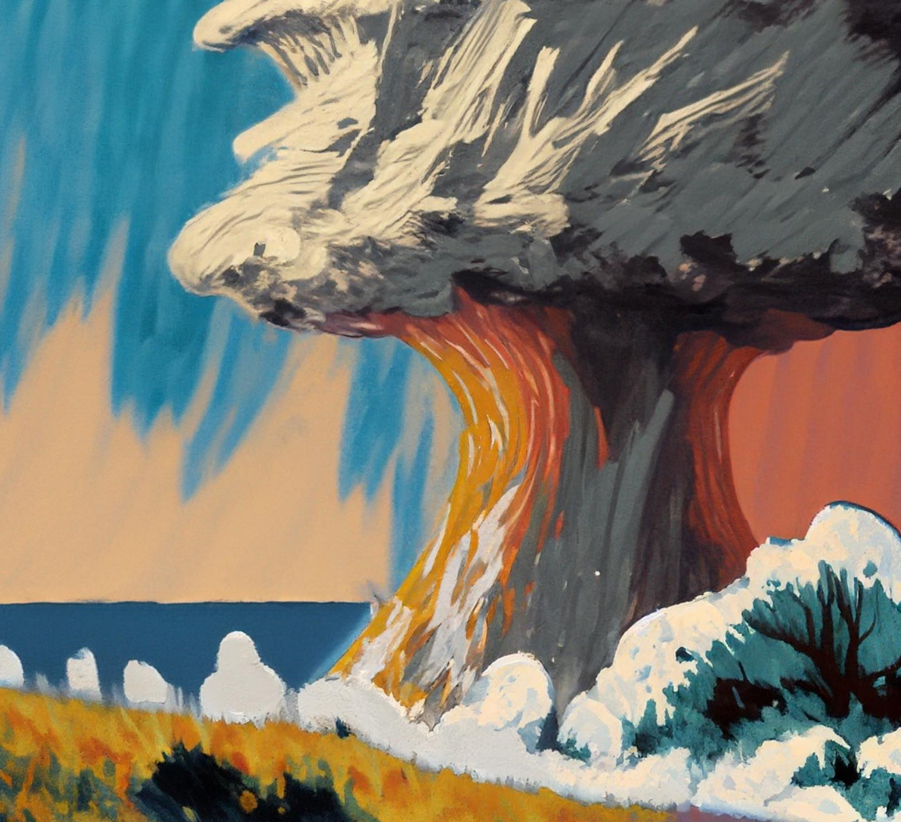
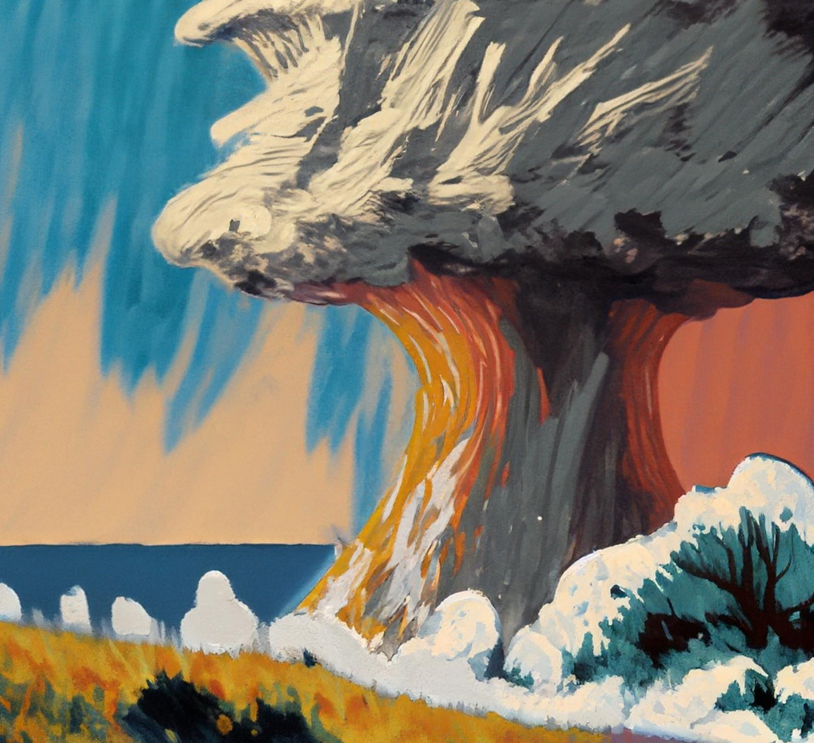

WHAT TO DO?
Before Earthquake
- Identify the safe and dangerous spots of the building; settle on a sturdy desk or table to hide beneath. Avoid the outside walls, mirrors, windows, fireplaces, unsecured tall furniture or anything that is hanging.
- Practice first aid. There are injuries caused by earthquakes. Anything may occur, ranging from fractures to cuts and scratches.
- Conduct practice drills; they equip the people with the knowledge they need to respond quickly and responsibly in the event of an earthquake. As a result, accidents and fatalities are decreased.
- Learn how to turn off the electricity, gas, and water. Strong earth movement might harm your pipes and result in a leak. Additionally, an undiscovered gas leak could find an ignition source and could lead to fire and an explosion.
- Transfer large objects to the floor or low shelves. Transfer heavy and unsecured items away from doors and escape routes.
- Keep a list of emergency numbers.
- Make an earthquake plan with your family; What to do and where to go during and after an earthquake.
Images:
During Earthquake
- If indoors, stay there and seek shelter under a table, desk, or other sturdy furniture. Avoid windows, brick fireplaces, glass walls.
- If you're outside, carefully move away from any areas with large trees and potentially unstable structures while protecting your head. If an open location is not accessible, find the best shelter you can.
- Keep your body and head safe from flying or falling items.
- Remain where you are until the earthquake stops. Plan your course of action first, then move towards the exit.
- If you're driving, come to a safe area as soon as you can. Remain inside your car and keep your head below the window, Until the shaking stops. Avoid parking your car below bridges or overpasses. Radio on, engine off. Observe any directions given during an emergency.
- If you must exit your car, swiftly find a space that is open.
Images:

After Earthquake
- Inspect for any injuries. dispense first aid. If there isn't a significant injury, fire, or other emergency, wait before using the telephone.
- Check the supplies of food and water.
- Check for other hazards and control them (fire, chemical spills, toxic fumes and possible collapse).
- Check building for cracks and damage, including roof, floor, and foundation.
- Turn on the radio to hear any emergency broadcasts or alerts, as well as news updates and instructions.
- Avoid using your car except in an emergency. Ensure that emergency vehicles have access to the streets.
- Be ready for aftershocks. Remain composed, and help out if you can.
- Prepare to evacuate if circumstances call for it.
Images:

 
